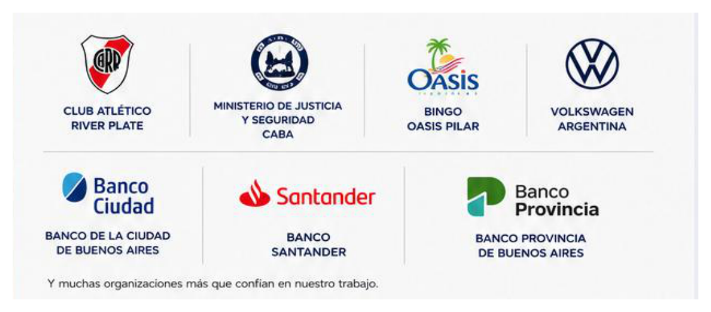
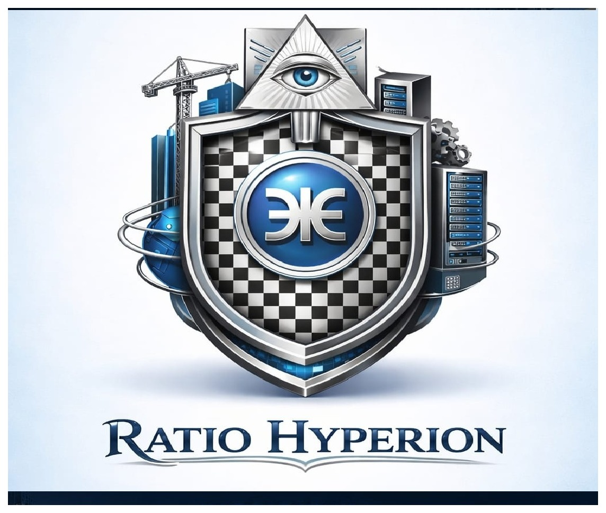

Tres unidades de negocio, un único proveedor técnico
Infraestructura, tecnología y servicios profesionales integrados.
Diseñamos, integramos y mantenemos la infraestructura tecnológica, edilicia y de gestión que impulsan edificios, empresas, industrias y organismos públicos.
Quiénes somos
Un único interlocutor técnico para infraestructura y tecnología
Ratio Hyperion es una empresa especializada en el diseño, provisión, construcción, implementación, integración y mantenimiento de soluciones de infraestructura, tecnología y servicios para entornos residenciales, comerciales, corporativos e industriales.
Brindamos soluciones integrales que abarcan desde la etapa de relevamiento y diseño hasta la provisión de equipamiento, ejecución de obras, puesta en marcha y mantenimiento posterior, permitiendo a nuestros clientes contar con un único interlocutor técnico para todas las disciplinas involucradas en sus proyectos.
Nuestra propuesta combina experiencia en obras civiles, infraestructura crítica, tecnología, energía y seguridad electrónica para desarrollar proyectos eficientes, escalables y alineados con los objetivos operativos de cada organización.
Nuestra visión
Ser el socio estratégico de referencia para empresas, industrias, administraciones de consorcios e instituciones que buscan soluciones integrales de infraestructura y tecnología, garantizando calidad, eficiencia y continuidad operativa.
Nuestras unidades de negocio
Un aliado estratégico para cada etapa de tu proyecto.
Tecnología
Seguridad electrónica, redes, CCTV, control de accesos y automatización — Ecosistema RH.
Ver Tecnología →Infraestructura
Obras civiles, construcción tradicional y en seco, reformas, energía y mantenimiento edilicio.
Ver Infraestructura →Servicios Profesionales
Constitución de sociedades, gestión impositiva, financiera y de activos para empresas y emprendedores.
Ver Servicios Profesionales →Confían en nosotros
Algunos de nuestros clientes

Y muchas organizaciones más que confían en nuestro trabajo
Nuestra historia
Más de dos décadas de experiencia integradas en una sola empresa
Ratio Hyperion nace en 2014, pero su origen es anterior: cada unidad de negocio se fue desarrollando con el tiempo hasta integrarse en una sola estructura.
Tecnología
Inicio de la especialización en sistemas de seguridad electrónica, redes e infraestructura tecnológica.
Servicios Profesionales
Comienza el desarrollo de servicios de gestión, asesoría impositiva y financiera para empresas.
Nace Ratio Hyperion
La experiencia acumulada en cada disciplina se integra en una empresa única.
Infraestructura
Se suma la unidad de obras civiles, reformas y mantenimiento edilicio integral.
Crecimiento
Ampliamos equipo y capacidades, incorporando nuevas disciplinas y tecnologías.
Expansión
Ejecutamos proyectos de mayor escala en diversas industrias y sectores.
Consolidación
Nos consolidamos como un socio estratégico con procesos robustos y certificaciones.
Innovación
Invertimos en tecnología e innovación para ofrecer soluciones más eficientes y sostenibles.
Visión futuro
Seguimos evolucionando para ser referentes en infraestructura crítica e integración tecnológica.

Nuestro primer emblema — el origen de la identidad de Ratio Hyperion.
Nuestra metodología
Un único socio estratégico para todo el ciclo de vida del proyecto
Relevamiento
Analizamos necesidades y relevamos información para definir el alcance.
Ingeniería
Desarrollamos la solución técnica óptima, asegurando factibilidad y eficiencia.
Diseño
Proyectos detallados con planos, especificaciones y documentación técnica.
Provisión
Suministro de equipos y materiales de marcas líderes, con garantía.
Ejecución
Obras e instalaciones con personal calificado, cumpliendo normas y plazos.
Puesta en marcha
Pruebas y validación del sistema, asegurando su correcto funcionamiento.
Mantenimiento
Soporte preventivo, correctivo y mejoras continuas para la continuidad operativa.
Contacto
Conversemos sobre tu próximo proyecto
Contanos qué necesitás y te asesoramos sin cargo. Respondemos por WhatsApp o mail.